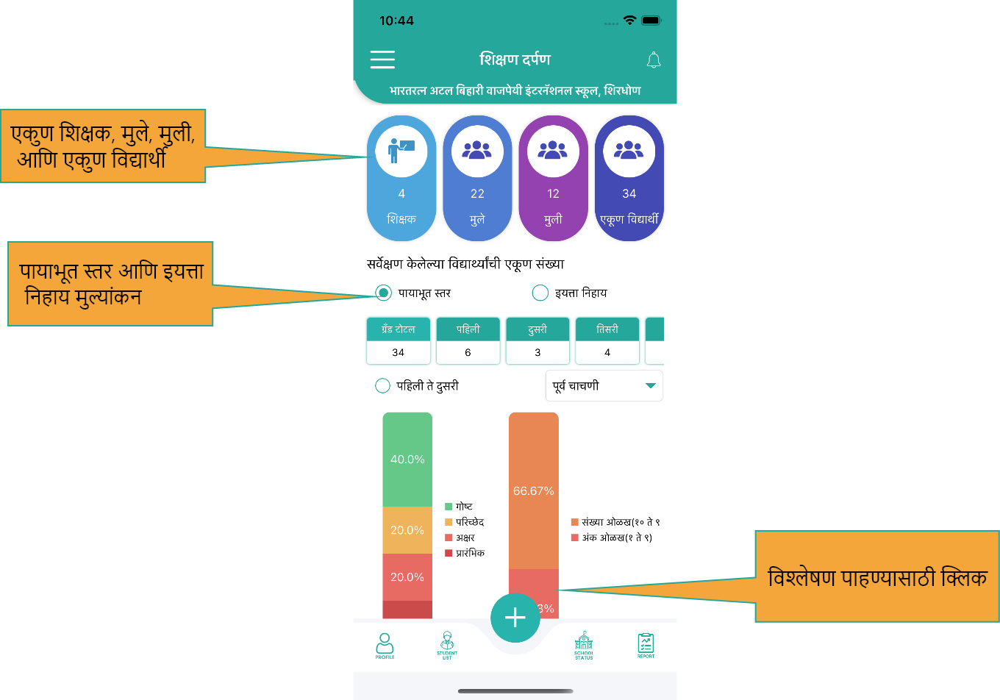

शिक्षक प्लेस्टोअर मधुन अप्लिकेशन डॉऊनलोड करतील, आणि आपले युझर नेम आणि पासवर्ड टाकुन
लॉगिन
करतील
2. मुखपृष्ठ
एकुण शिक्षक, मुले, मुली, आणि एकूण विध्यार्थी दिसतील , तसेच सर्वेक्षण केलेल्या एकूण विद्यार्थ्यांची संख्या , इयत्ता निहाय येथे दिसेल
पायाभूत स्तर आणि इयत्ता निहाय मूल्यांकन हे दोन्ही पर्याय असून दोनीही मूल्यांकन सहज करू शकता
विश्लेषण करण्यासाठी विविध तक्त्यांचा वापर केला असून पहिला आणि दुसरा तक्ता आपणास विषयानुसार
विद्यार्थ्यांची स्तर निहाय माहिती देतात
इयत्ता निहाय प्रत्येक शाळेचा त्याच प्रमाणे तक्त्यावर क्लिक केले असता विध्यार्थाचे गुण पाहू
शकता

3. मुखपृष्ठ
निळ्या रंगाचा तक्ता केंद्र शाळांची माहिती दर्शवतो
4. मेन्यू
होम वरती क्लिक केल्यास मुखपृष्ठ येईल
सर्व डाटा उपडेट करण्यासाठी डाटा सिंक करा
विद्यार्थ्यांचे मूल्यांकन घेऊ शकता
विध्यार्थी यादी पाहू शकता
इतर शाळेची स्थिती तसेच तुलना करून पाहू शकता
अहवाल पाहू शकता
सेटिंग मध्ये भाषा बदलता येते
लॉगआउट करून बाहेर पडू शकता
5. प्रोफाइल
प्रोफाइल मध्ये वापरकर्ता आपली माहिती पाहू शकतो
6. प्रोफाइल
मोबाइल क्रमांक आणि ई-मेल अपडेट करू शकता
7. मूल्यांकन
मेन्यू मध्ये मूल्यांकन वर क्लिक केल्यास शिक्षकांनी एकूण विद्यार्थ्यांचे घेतलेले मूल्यांकन दिसेल
आणि
क्लिक
केल्यास मूल्यांकन झालेल्या सर्व विद्यार्थ्यांची यादी दिसेल
शिक्षक ज्या शाळेमध्ये आहेत त्या शाळेमध्ये अधिकाऱ्यांनी घेतलेले मूल्यांकन दिसेल तसेच कोणत्या
अधिकाऱ्यांनी घेतले ती यादी दिसेल
नविन मूल्यांकन सुरु करून नवीन किंवा उर्वरित विद्यार्थ्यांचे मूल्यांकन घेता येईल
8. मूल्यांकन
मूल्यांकनाचा प्रकार निवडून (पायाभूत किंवा वर्ग निहाय )नमुना चाचणी क्रमांक टाका,चाचणी प्रकार
निवडा
आणि
इयत्ता निवडून विषय निवडा आणि मूल्यांकनास सुरु करा
9. मूल्यांकन
मूल्यांकन घेताना विषय शिक्षकांचे नाव , विषय इयत्ता आणि एकूण विध्यार्थी दिसतील
कोणत्याही विद्यार्थ्यांचे नाव टाईप करून तो विध्यार्थी शोधू शकता
विद्यार्थ्यांचे मूल्यांकन सुरु करू शकता आणि योग्य पर्याय निवडून विध्यार्थाचा स्तर नोंदवू
शकता
10. विध्यार्थी यादी
मेन्यू वर जाऊन विध्यार्थी यादीवर क्लिक करून वरील विध्यार्थी यादी दिसेल
शिक्षकांना नियुक्त केलेल्या वर्गानुसार विषय निहाय यादी दिसेल
विद्यार्थ्यांचे नाव टाइप करून कोणताही विद्यार्थी शोधू शकता
11. विध्यार्थी कामगिरी
विध्यार्थी गुणपत्रक / कामगिरी आपणास विध्यार्थी यादीमधील विद्यार्थ्यांवर क्लिक केल्यास तसेच मुखपृष्ठावर असलेल्या विश्लेषणावर क्लिक केल्यास विध्यार्थी निहाय दिसेल
पायाभूत स्तर आणि इयत्ता निहाय स्तर निवडून विध्यार्थाची कामगिरी पाहू शकता
विषय निवडून , विषय निहाय विद्यार्थ्यांची कामगिरी पाहू शकता
शिक्षकांनी घेतलेले त्या विद्यार्थ्यांचे मूल्यांकन दिनांक आणि वेळ याची नोंद यादी मध्ये दिसेल
12. इतर शाळेची स्तिती
मेन्यू मध्ये इतर शाळेची स्थिती निवडा आणि आपल्या शाळेची आपल्या केंद्र मधील शाळेशी तुलना करून पाहू शकता
चाचणी नुसार , इयत्ता निहाय , विषय निहाय शाळेची स्थिती पाहू शकता
13. नोटीफिकेशन
मुखपृष्ठावर उजव्या बाजूला घंटी सारख्या चिन्हावर क्लिक केल्यास आपणास अधिकाऱ्यांनी घेतलेले
मूल्यांकन
तसेच कोणत्या विध्यार्थाचे मूल्यांकन कधी घेण्यात आले हे समजते
14. फिल्टर
मुखपृष्ठावर वरती उजव्या बाजूला फिल्टर दिलेला असून तुम्ही त्यावर क्लिक करून तालुका केंद्र
तसेच
शाळा
निवडून अहवाल पाहू शकता
15. अहवाल
मुखपृष्ठावरील मेन्यू वर क्लिक केल्यास अहवाल मध्ये आपणास विध्यार्थी तसेच अधिकारी अहवाल तपासता
येऊ
शकतो
तालुका ,केंद्र ,शाळा ,शैक्षणिक वर्ष ,चाचणी, इयत्ता ,विषय ,आणि कोणत्या तारखेपासून कोणत्या
तारखेपर्यंत
पाहिजे ती तारीख निवड आणि अहवाल पहा
16. डाटा सिंक करणे
मेन्यू मध्ये तसेच मुखपृष्ठावर अर्ध गोल चिन्हावर क्लिक केल्यास डेटा सिंक केला जाईल
मूल्यांकन घेण्याआधी तसेच मूल्यांकन घेतल्यानंतर डाटा सिंक करणे आवश्यक आहे